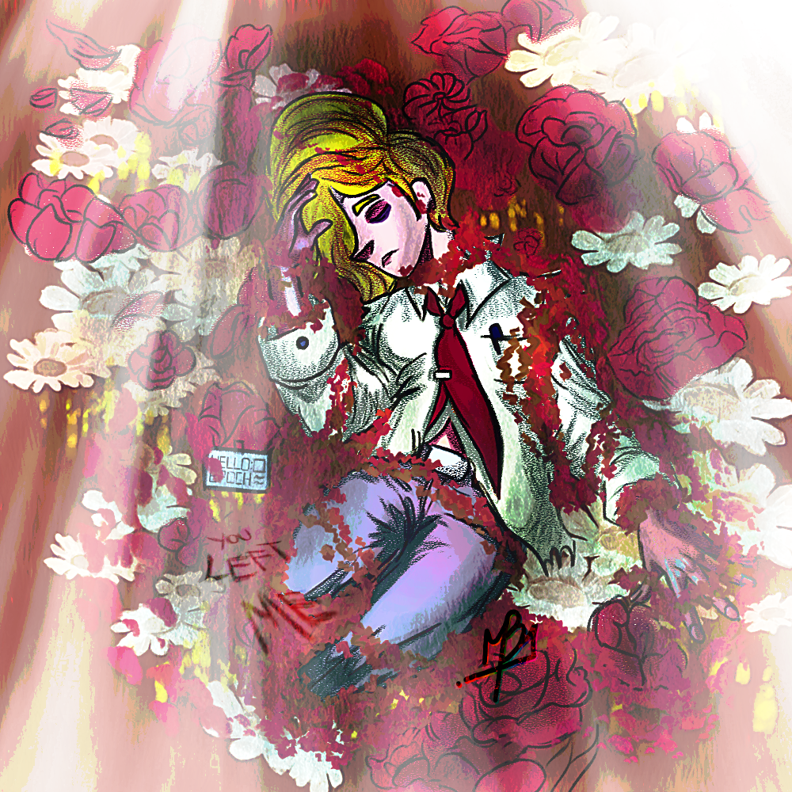

Image 1
This is the first image.

Image 2
This is the second image.

Image 3
This is the third image.
Image 4
This is the fourth image.
This is the first image.
This is the second image.
This is the third image.
This is the fourth image.